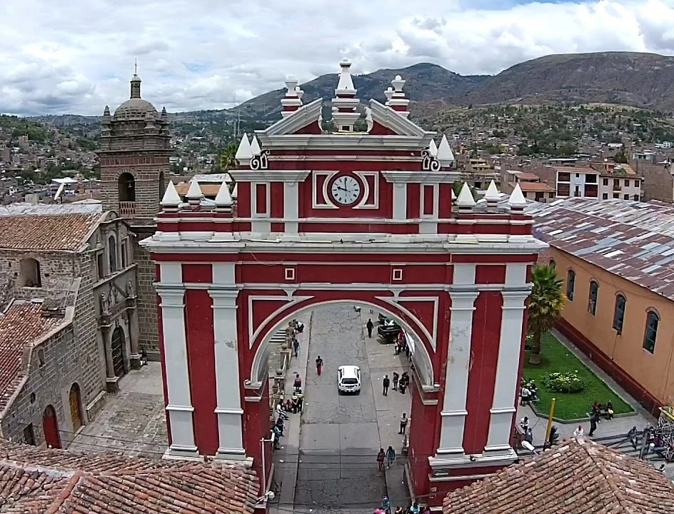

Obelisco de Quinua
Plaza de armas de Ayacucho
Catedral de Ayacucho

Arco del Triunfo
Reserva Natural Pampa Galeras
Piscinas Naturales de Millpu
Puya Raymondi
Cuevas de Pikimachay
Retablo Ayacuchano
Semana Santa en Ayacucho
Complejo Arqueológico Wari